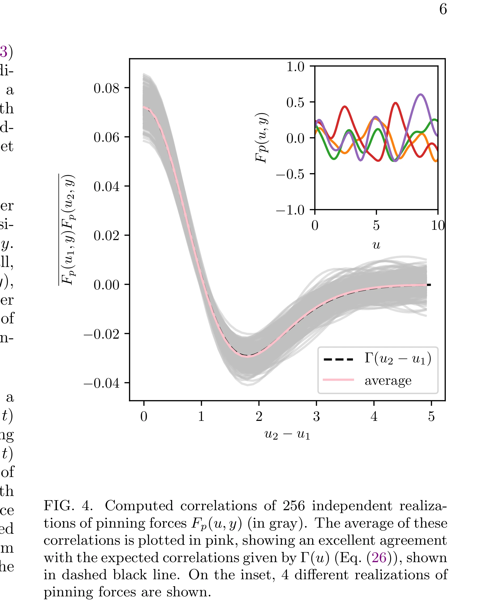
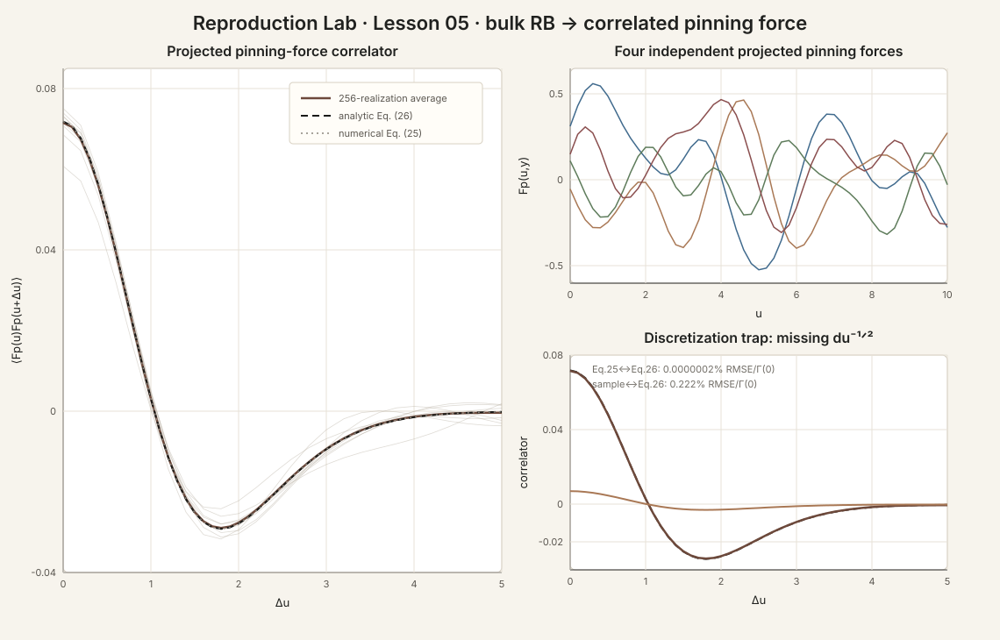

bulk 里是白噪声 RB，interface 为什么看到的是有相关长度的 pinning force？
这一步和你的项目非常接近。Caballero 2020 在 bulk Ginzburg–Landau 势垒高度里加入 delta-correlated random-bond disorder，然后把它投影到 domain wall。关键结果不是“无序还叫 RB”，而是：经过有限宽度 wall profile 的投影以后，interface 实际感受到的 pinning force 在位移 u 方向变成短程相关，其 correlation length 是 wall width 的量级。
0 · 原论文 Fig.4 vs 我们的 bulk-projection reproduction

256 个独立 pinning-force realizations 的相关函数；平均值与理论 Γ(u) 对照。Inset 展示 4 条 Fp(u,y)。这是进入 disordered-interface dynamics 前的 correlator gold test。

统计仍用 256 realizations、M=10000、du=0.1。不同点是我们不直接从 Eq.27 合成 Fp，而是先生成 continuum-normalized bulk ζ(x,y)，再按 Eq.23 投影；因此更直接检查 bulk→interface 这一步本身。
1 · bulk random-bond disorder 到底加在哪里？
论文不是直接给 interface 一个随机力，而是先改 bulk double-well barrier：
其中 ζ(r) 是 zero-mean、delta-correlated Gaussian field。这个选择属于 barrier-amplitude / random-bond-like coupling：它改变局域势垒，而不是给两个极化方向加一个直接 local bias。
2 · Eq.23：wall 本身就是一个空间滤波器
把 clean soliton ansatz φ*(x−u) 代入以后，论文得到：
所以一格一格独立的 bulk ζ 并不会原样传给 wall。它先被 kernel
卷积。因为 k(x) 只在 wall 附近显著，wall width w 自然成为 effective disorder correlation length 的来源。
K = np.fft.fft(phi_prime * phi_second)
Fp = epsilon * gamma * du * np.fft.ifft(
np.fft.fft(zeta, axis=1) * np.conj(K)[None, :], axis=1
).real3 · Eq.25：理论 target 不是拟合出来的
这就是本课 target。我们直接数值积分 Eq.25，不拿 sample data 去拟合 Γ 的宽度或幅度。论文进一步给出 closed-form Eq.26，并指出 effective disorder 沿 u 是 short-range correlated，相关长度是 wall width w 的量级。
wall width
α=δ=γ=1 时 w=√2≈1.414。
Γ first zero
理论值约 1.0394，确实与 w 同量级。
不是新自由参数
correlation scale 是 bulk disorder 经 wall profile 投影后的结果。
4 · 一个特别容易错的地方：continuum white noise 不是“每格 std=1”
连续定义是：
离散成格距 du 后，Kronecker delta 与 Dirac delta 之间差一个 1/du，因此：
base = rng.standard_normal((R, M)) zeta_correct = base / np.sqrt(du) zeta_wrong = base
5 · 我们尽量贴论文 protocol，但不伪装成完全相同
| 项目 | Caballero Fig.4 | 本课 |
|---|---|---|
| realizations | 256 | 256，相同 |
| M | 10⁴ | 10⁴，相同 |
| grid spacing | δl=0.1 | du=0.1，相同 |
| ε | 1 | 1，相同 |
| 生成 Fp 的方式 | Eq.27 Fourier synthesis；文中 Fig.4 取 D=1 | bulk ζ → Eq.23 projection，α=δ=γ=1 |
| theory target | Γ(u), Eq.26 | Γ(u), Eq.25 numerical quadrature |
所以我们复现的是 Fig.4 的物理/统计结构，同时刻意选择更能检查 model reduction 的生成路线；不是逐行重写作者的随机数生成器。
6 · Hard gates：相关函数必须定量对上
| quantity | result | gate |
|---|---|---|
| Γ(0) theory | 0.0718331 | reference |
| C(0)/Γ(0) | 0.995554 | 0.98–1.02 |
| RMSE / Γ(0), 0≤Δu≤5 | 0.222% | <1% |
| max |error| / Γ(0) | 0.445% | <1.5% |
| normalized-shape RMSE | 0.104% | diagnostic |
| first zero: theory | 1.039429 | difference <0.01 |
| first zero: empirical | 1.039472 | |
| 故意错误 std=1 | 0.099555 × theory amplitude | 应暴露 10× normalization error |
7 · 完整脚本
打开 Lesson 05 Python 脚本 → 依赖只有 NumPy + Matplotlib；没有 time integration，所以 paper-size correlation test 很轻。
phi0, w = 1.000000, 1.414214 M, du, realizations = 10000, 0.100, 256 Gamma(0) theory = 0.071833070 C(0)/Gamma(0) = 0.995554 RMSE/Gamma(0), 0<=u<=5 = 0.222% max abs/Gamma(0) = 0.445% normalized-shape RMSE = 0.104% first zero theory = 1.039429 first zero empirical = 1.039472 WRONG std=1 amplitude = 0.099555 x theory ALL DISORDER-PROJECTION GATES PASS
8 · 这一步证明了什么？没证明什么？
已经证明
RB bulk coupling 经过有限宽度 soliton 投影后产生短程相关 pinning force；我们的离散实现和 Eq.25 一致；continuum white-noise normalization 正确。
还没证明
没有证明 depinning exponent、没有证明 RF 与 RB 同 universality、也没有证明 sliding-FE 的真实 defect 必然等价于这个 φ⁴ RB model。
9 · Lesson 06：从 correlator gold test 进入真正的 disordered wall geometry
Caballero Fig.5 下一步同时比较 2D GL 与 1D EW 的 B(r,t) 和 S(q,t)。随着时间增长，large-scale roughness 离开 thermal regime，并接近 random-bond roughness ζRB=2/3。那一课才会开始真正验证：正确的 disorder correlator 是否产生正确的 interface geometry。